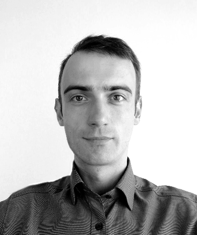

Problémy?
Promluvme si.
Co dává terapie
V prvovom řadě terapie pomáhá skutečně se chápat a akceptovat. Je to proces, který na rozdíl od
dočasných řešení přináší dlouhodobě pozitivní výsledky.
Pokud se oba rozhodneme spolupracovat, během konzultací budeme hovořit o Vašich myšlenkách, pocitech,
obavách a čemkoli, co Vás tíží.
Já Vám při tom budu pozorně naslouchat, přičemž nesoudím, nenálepkujem a nevystavuji diagnózy. A
také neradím.
Namísto toho je mým cílem citlivě pochopit to, co přinášíte. Když se Vaše otevřenost setká s
emaptiou a respektem, umožní Vám to strávit nezpracované zážitky a znovu nabýt důvěru k sobě a
životu. Diskrétnost je přitom samozřejmostí.
Myslíme si, že posloucháme, avšak sotva kdy posloucháme
se skutečným pochopením, pravdivou empatií.
Ale právě takové jedinečné naslouchání je jednou z nejsilnějších sil přinášejících
změnu, jaké znám.
Carl Ranson Rogers
Objednejte si zkušební setkání
Terapie zaměřená na člověka: PCA přístup
Při terapii aplikuji přístup zaměřený na člověka, který je také označován jako PCA přístup
(z anglického Person Centered Approach) a řadí se k humanistické
psychologii. Tento přístup byl vyvinut v USA v 50. letech 20. století Carlem R. Rogersem.
V té době se jednalo o revoluci, protože Rogers se odmítl stavět do pozice experta na
klientův život. Místo toho se snažil mít člověka rád a porozumět mu. Proto i název „terapie
zaměřená na člověka“. Rogers viděl v samotném klientovi nejlepšího
experta na jeho vlastní život.
Teorie PCA ve zkratce hovoří o tom, že každý živý organismus má v sobě program růstu. V
ideálním prostředí se tak organismus sám od sebe tělesně i duševně optimálně rozvíjí. Pokud
je však program z nějakého důvodu narušený a organismus se nemůže přirozeně rozvíjet,
nastávají poruchy.
Cílem terapie je vytvořit psychicky a fyzicky bezpečné prostředí,
kde se klient bude moci na své problémy podívat otevřeně, bez společenských
masek.
Rogers zjistil, že pokud terapeut dokáže vytvořit takové prostředí, ve kterém bezpodmínečně
přijímá klienta a jeho témata, je při tom empatický a autentický (sám se neskrývá za nějakou
maskou), nastává automatická „oprava“ programu.
Terapie efektivně řeší:
- problémy ve vztazích
- ztrátu smyslu života
- závislosti
- neschopnosť povedať „nie“
- pocit menejcennosti
- pocity úzkosti
- prokrastinácia
- strach z autorít
- stres a vyhorenie
- osamotenosť
- strach zo smrti
- pocity viny
- problémy so spánkom
- traumy a krízy
Terapie umí také pomoci, pokud Vám jde o osobnostní rozvoj, jako je sebarealizácia,
vylepšení vztahů či komunikace.
Proč jsem se rozhodl stát terapeutem

Narodil jsem se v roce 1983 v Bratislavě, kde jsem i vyrůstal. Později jsem žil a studoval
ve Vídni nejprve informatiku a potom psychologii. Nyní působím v Praze.
Zažil jsem, jaký obrat způsobila terapie v mém životě. Až do třicítky jsem si celkem úspěšně
budoval kariéru v IT. Pak mě ale životní krize v podobě zlomeného srdce donutila začít
hledat…
A nakonec to byla právě psychoterapie, která mi změnila pohled na život. Uvědomil jsem si
při ní, že život je v pořádku, tak jak je. Krása tohoto uvědomění byla, že se jednalo o
praktickou zkušenost, tedy zážitek a ne jen slova.
Tehdy jsem našel své nové povolání. Dal jsem se na studium psychologie a na stejný výcvik,
ve kterém jsem absolvoval terapii – PCA.
Ze školy jsem odešel po třech semestrech. Cítil jsem, že více teorie mi neumožní být
lidštějším, a tím pádem lepším terapeutem. Pokračoval jsem už jen ve výcviku, který jsem
ukončil v roce 2019.
Co se mi líbí na terapii
Líbí se mi, jak umí být terapie účinná a že je praktická. Líbí se mi také, že mohu pracovat
s lidmi a spolu můžeme obnovovat důvěru k tomu zázraku zvanému život.
A tím mohu dávat dále to, co mi tak pozitivně a radikálně ovlivnilo život.
Vzdělání
-
2015 – 2019 PCA institut Praha, komplexní výcvikový program v
psychoterapii a poradenství zaměřeném na člověka
-
2015 – 2019 PCA institut Praha výcvik v relaxačních
technikách—Schultzův autogenní trénink
-
2014 – 2016 Univerzita Vídeň, psychologie (nedokončené)
-
2002 – 2009 Technická univerzita Vídeň, magisterské studium
informatiky, dosažený titul Dipl.-Ing.
- 1997 – 2002 Obchodní akademie Neusiedl/See
Ceník a podmínky
Pracuji pouze na přímou úhradu. To znamená, že na moje služby nepřispívá zdravotní
pojišťovna. Má to výhodu, že nejste nuceni přijít ke mně s diagnózou a doporučením od
psychiatra.
Také nepodléhám povinnosti posílat záznamy o psychoterapii do Vaší zdravotní pojišťovny.
První setkání 400 CZK / 50 minut, následující setkání 800 CZK / 50
minut
Čas Vaší konzultace je rezervován jen pro Vás. Jednou dohodnuté setkání můžete zrušit bez
poplatků do 24 hodin před ním, pak je účtována jeho plná cena.
Jazyky
Terapii poskytuji ve slovenštině (česky rozumím), němčině nebo angličtině.
Etický kodex
Při práci se řídím etickým kodexem České asociace pro psychoterapii (ČAP) a absolvuji
pravidelné
supervize.